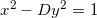

Problem 66 is one of those problems that make Project Euler lots of fun. It doesn't have a brute-force solution, and to solve it one actually has to implement a non-trivial mathematical algorithm and get exposed to several interesting techniques.
I will not post the solution or the full code for the problem here, just a couple of hints.
After a very short bout of Googling, you'll discover that the Diophantine equation:

Is quite famous and is called Pell's equation. From here, further web searches and Wikipedia-reading will bring you to at least two methods for finding the fundamental solution, which is the pair of x and y with minimal x solving it.
One of the methods involves computing the continued-fraction representation of the square root of D. This page is a must read on this topic, and will help you with other Euler problems as well.
I want to post here a code snippet that implements the continued-fraction computation described in that link. Its steps follow the Algebraic algoritm given there:
def CF_of_sqrt(n):
""" Compute the continued fraction representation of the
square root of N.
The first element in the returned array is the whole
part of the fraction. The others are the denominators
up to (and not including) the point where it starts
repeating.
Uses the algorithm explained here:
http://www.mcs.surrey.ac.uk/Personal/R.Knott/Fibonacci/cfINTRO.html
In the section named: "Methods of finding continued
fractions for square roots"
"""
if is_square(n):
return [int(math.sqrt(n))]
ans = []
step1_num = 0
step1_denom = 1
while True:
nextn = int((math.floor(math.sqrt(n)) + step1_num) / step1_denom)
ans.append(int(nextn))
step2_num = step1_denom
step2_denom = step1_num - step1_denom * nextn
step3_denom = (n - step2_denom ** 2) / step2_num
step3_num = -step2_denom
if step3_denom == 1:
ans.append(ans[0] * 2)
break
step1_num, step1_denom = step3_num, step3_denom
return ans
As I said, this still isn't enough to solve the problem, but with this code in hand, the solution isn't too far. Read some more about Pell's equation and you'll discover how to use this code to reach a solution.
It took my program ~30 milliseconds to find an answer to the problem, by the way. It took less than a second to solve a 10-times larger problem (for D <= 10000), so I believe it to be a pretty good implementation.